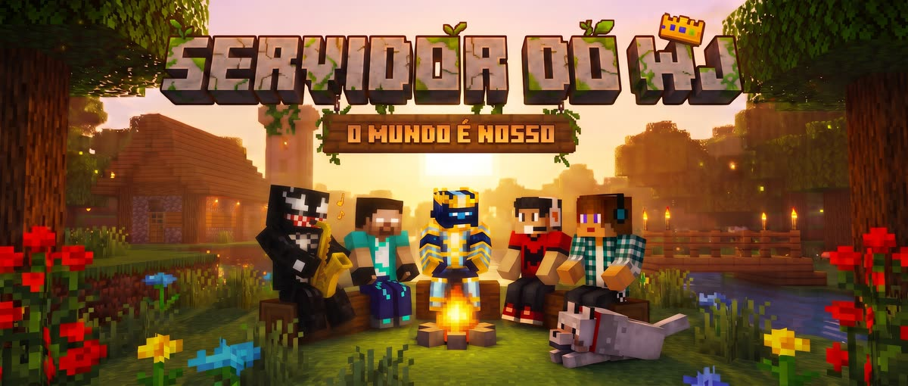

Abrindo o Minecraft…
Entrar no servidorAbre o Minecraft e já entra no servidor. Se ele perguntar se você confia no servidor, toque em Continuar.
Não tenho o Minecraft Não tenho o MinecraftDepois de instalar, volte aqui e toque em Entrar no servidor.
Não abriu? Adicione na mão: endereço minewj.duckdns.org porta 19132